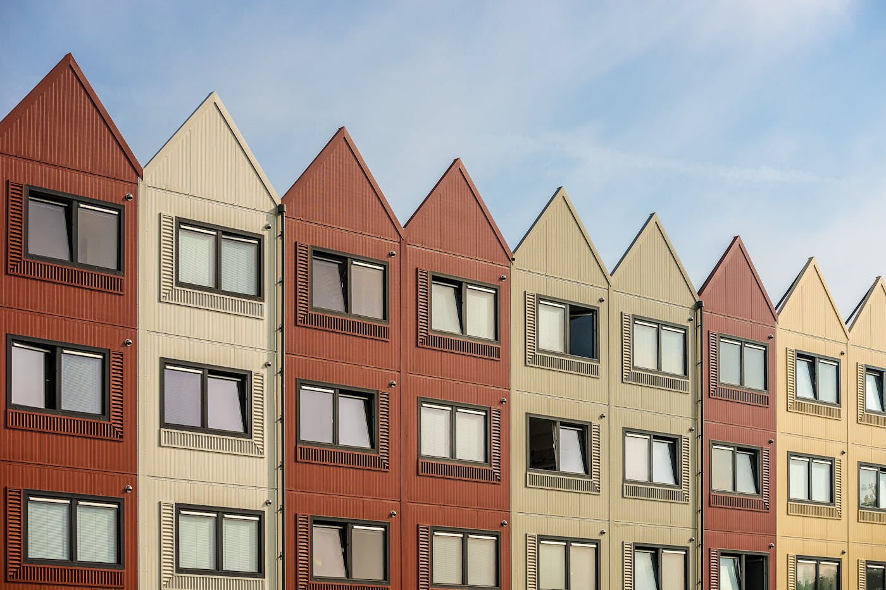
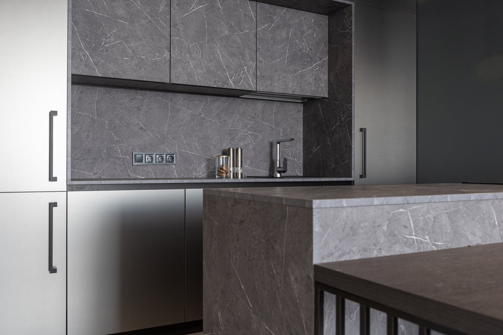

Quick answer: The two main builder awards programs in Australia are the Housing Industry Association (HIA) Awards and the Master Builders Association (MBA) Awards. Both run state-based competitions that progress to national finals. For residential construction in NSW, the HIA NSW Housing Awards and the MBA NSW Excellence in Housing Awards are the most relevant programs. A win or finalist placement means an independent panel judged a specific project against defined criteria — it does not automatically guarantee the quality of every project the builder delivers.
It is awards season again. In the residential building industry that means certificates in reception areas, trophy cases beside the foyer brochures, and the phrase “award-winning builder” appearing on websites in roughly the way “artisanal” appears on supermarket bread — frequently, and with a range of interpretations. This is not a complaint. It is a contextualisation.
[Right. Straight face now.] Here is the practical version: what the main Australian builder awards actually cover, what a win does and does not tell you, how to check a builder’s award claims before they become part of your decision, and when awards should carry real weight in your selection process.
- The main builder awards programs in Australia
- HIA Awards: structure, categories, and how winners are selected
- MBA NSW Excellence Awards: residential and construction
- What winning a builder award actually measures
- What builder awards don’t tell you
- How to verify a builder’s award claims
- Builder awards and custom home builders in Sydney
- When NOT to use awards as your primary selection tool
- Six questions to ask an award-winning builder
- FAQ
The Main Builder Awards Programs in Australia
Two national bodies run the programs that matter most in the residential sector. A third category — architectural prizes — operates separately and is worth understanding as a distinct signal.
Housing Industry Association (HIA) Awards are run by the largest residential building industry association in Australia. The HIA operates state and territory-level awards programs, with category winners progressing to the HIA Australian Housing Awards — the national finals held annually. Over 100 categories are judged, covering custom-built homes, project homes, renovations, kitchen and bathroom fit-outs, kitchen and bathroom design, sustainability, business management, and customer service. The breadth of the program means a builder can enter categories suited to the type and scale of work they do.
Master Builders Australia (MBA) Awards are run by the Master Builders Association, which operates through state affiliates. In NSW, the relevant bodies are the Master Builders Association of NSW (MBA NSW), which runs the Excellence in Housing Awards for residential projects and the Excellence in Construction Awards for commercial and civil projects. The MBA NSW also runs Regional Excellence in Building Awards for projects outside the metropolitan area.
Australian Institute of Architects Awards are architectural prizes rather than builder awards. They are judged by the architectural profession and recognise design excellence rather than construction quality or client service. A home that wins an architectural award may have been built by any number of builders. If you see a builder referring to architectural awards on their marketing, confirm whether the award recognises the construction, the design, or both.
HIA Awards: Structure, Categories, and How Winners Are Selected
The HIA program runs at four levels: regional, state, national, and — for the flagship Home of the Year — a single annual national winner selected from among the state winners across the country.
For custom residential construction in NSW, the most relevant categories are:
- Custom-Built Home — a home uniquely designed and built to a client’s brief, judged on construction quality, design response to the site, specification level, and build quality
- Renovation or Addition — covering extensions, alterations, and full home transformations
- Multi-Dwelling Development — townhouses, duplexes, and apartment projects
- Professional Major Builder — for builders with substantial annual turnover, judged on customer service, business management, and project delivery
- Customer Satisfaction — a category judged on client feedback scores and evidence of post-handover support
Judging involves site inspections of completed projects, review of documentation, and — in some categories — structured interviews with builder and client. The process is not a paper exercise. Judges are typically senior industry practitioners appointed by the HIA.
The 2026 HIA Australian Home of the Year was awarded to Queensland builder Mactech Constructions for a project on the Gold Coast. NSW builders won eight national titles at the 2026 competition — a significant result that reflects the depth of residential construction quality in this state.

Photo via Pexels
MBA NSW Excellence Awards: Residential and Construction
The MBA NSW runs two distinct awards programs, and it is worth knowing which one applies to the builder you are researching.
The NSW Excellence in Housing Awards cover residential projects: custom homes, project homes, dual occupancy, townhouses, apartment complexes, and alterations and additions. Entries are judged on construction quality, workmanship, design, and the builder’s management of the project from engagement to handover. This is the program relevant to most homeowners commissioning a new home or significant renovation.
The NSW Excellence in Construction Awards cover commercial, industrial, and civil engineering projects. The gala for this program is held annually at the International Convention Centre in Sydney. If a builder’s website references an MBA NSW construction award, confirm it was for a residential project rather than a warehouse or civil works contract — the categories and judging criteria are different.
The MBA also runs Regional Excellence in Building Awards for projects outside the Sydney metropolitan area. A regional win progresses to the state competition. For clients in outer Sydney, the Hunter, the Illawarra, or regional NSW, a regional award finalist is still a meaningful credential.
Both HIA and MBA NSW programs publish their winners publicly. If a builder claims a specific award, the result should be verifiable in under five minutes against those published records.
What Winning a Builder Award Actually Measures
Photo via Pexels
An award win represents an independent assessment of a specific project at a specific point in time. Understanding what was judged — and what was not — is the useful part of this exercise.
What judges typically assess:
- Construction quality: finishes, tolerances, workmanship standards against the relevant Australian Standards
- Design response: how well the completed home responds to its site, orientation, brief, and planning constraints
- Specification: the quality and consistency of materials, fixtures, and joinery selections relative to the category
- Project management: evidence of programme management, documentation, and variation handling
- Client satisfaction: in customer-facing categories, feedback from the homeowner is a direct input
A win in the Custom-Built Home category at the HIA NSW Housing Awards means a panel of experienced industry practitioners inspected the finished project and found it to be among the best examples of that type of work delivered in NSW that year. That is a meaningful signal. It represents real construction quality validated by people who know what they are looking at.
The practical implication for clients: a builder who has won awards for custom residential work in your price range and project type has a documented track record of producing that standard of result. This is more useful information than a testimonial on a website.
What Builder Awards Don’t Tell You
This section is the one most builder marketing skips. We are not most builder marketing.
Awards assess a project, not a company. The builder who produced the award-winning home in 2021 may have a different site supervisor, a different subcontractor base, and a different project management team in 2026. The award reflects that team at that moment — it does not guarantee the current team delivers to the same standard. Ask specifically about the continuity of personnel on the projects that won the awards.
Awards do not assess financial stability. A builder can produce exceptional construction quality and still carry problematic cash flow, undercapitalised operations, or an insolvency risk. The HIA and MBA judging criteria focus on the build, not the balance sheet. Separately verify that the builder holds current home warranty insurance (required in NSW for residential contracts over $20,000) and has no adverse entries on the NSW Fair Trading licence register.
Awards do not reflect what it is like to be the client. Construction quality and client experience are related but not identical. A builder who produces outstanding finishes and mismanages communication, variations, or handover administration is both award-eligible and genuinely difficult to work with. References from recent clients are the only reliable way to assess this — and they are irreplaceable. A builder who won’t provide three references (with contact details, not curated testimonials) is, in a way, also providing a reference.
Awards can age. A win from 2015 in a volume builder category is not the same credential as a win from 2024 in the custom-built home category at the level you are building. Always confirm the year, category, and value range of the project that won.
How to Verify a Builder’s Award Claims
The steps are straightforward and take less time than most people assume.
- Request specifics: Ask the builder for the award name, issuing body (HIA or MBA), category, year, and whether the result was a win, finalist placement, or commendation. These are different things. A finalist placement means the project was judged competitive; a win means it was judged best in category.
- Cross-reference against published records: HIA award winners are published at hia.com.au. MBA NSW winners are published at mbansw.asn.au. If the builder’s claimed award does not appear in those records, ask for clarification before proceeding.
- Check the category against your project: A builder who has won awards for townhouse construction in the $500,000–$800,000 range does not necessarily have a track record in custom homes at $2M+. Confirm that the awarded project is comparable in type, value, and complexity to what you are commissioning.
- Check the licence simultaneously: The NSW Fair Trading licence register confirms that the builder’s licence is current, active, and in the correct company name. An award from 2019 and a current valid licence are two separate checks — run both.
This process takes approximately twenty minutes. For a $1.5M–$3M+ commitment, twenty minutes is a reasonable investment.
Builder Awards and Custom Home Builders in Sydney

Photo via Pexels
In Sydney’s custom residential market, the HIA NSW Custom-Built Home category and the MBA NSW Excellence in Housing Awards for custom homes are the most relevant credentials to look for. Both programs assess projects at the level of specification and site-specific design response that characterises genuine custom construction.
Sydney’s premium custom market — the Northern Beaches, Lower North Shore, Eastern Suburbs, and Hills District — produces a significant proportion of the state’s award-eligible custom-built home entries each year. The density of high-specification work in these areas means that competition for awards in the custom category is real. A win in this category in Sydney carries weight.
For clients considering custom builds in specific Sydney locations, our guides to custom home builders on the North Shore and custom home builders in Sydney’s Western Suburbs cover what award-level construction looks like across different parts of the city. The specification expectations, block types, and approval pathways differ enough between suburbs that a builder’s award record is worth contextualising against the location you are building in.
Multi-dwelling projects — duplexes and townhouses — have their own award categories. If you are commissioning a duplex in Sydney, confirm that any award claims relate to multi-dwelling work rather than single-home custom projects. The construction and project management demands differ, and a track record in one does not automatically transfer to the other.
The NSW Planning Portal is a useful parallel check: confirm your site’s planning controls before briefing any builder, awarded or otherwise. The approval pathway for your specific block is determined by zoning and council, not by the builder’s award history.
When NOT to Use Awards as Your Primary Selection Tool
Awards are one input into a decision that should draw on several independent signals. There are situations where they should carry less weight than the marketing around them suggests.
When the award is in a different category from your project. A builder who has won repeatedly for commercial fitouts or project home delivery has a different track record from one whose awards are concentrated in custom residential construction. Mismatched category histories are common and worth checking.
When the most recent award is more than five years old. Building is a business with significant personnel turnover, ownership changes, and operational shifts. A builder whose last award win was in 2019 may still be delivering excellent work — but confirm this through references and site visits rather than assuming the 2019 credential still reflects 2026 capability.
When you cannot get references for projects comparable to yours. An award record without supporting client references is a partial picture. If the builder is reluctant to provide direct contact with clients from comparable projects — similar in type, value, and suburb — treat that reluctance as material information regardless of the awards on the wall.
When price is the primary constraint. Award-winning builders in the custom residential category typically operate at the specification level that attracts awards — which is not the lowest-cost point in the market. If your budget requires the most competitive pricing available, a builder optimised for quality recognition may not be the right fit. Our guide on how to choose a custom home builder covers the full selection framework including price-quality trade-offs.
When the builder is carrying awards from previous ownership or management. If the company has changed hands or undergone significant leadership changes since the award was won, ask directly about the continuity of the team that produced the awarded work. The ABN on the licence and the people doing the building are two different things.
Six Questions to Ask an Award-Winning Builder
Do this research before the first meeting, not after you have had three good conversations and are halfway through selecting tiles.
- Which specific award, in which category and year, are you citing — and can I see the published result? Any legitimate award win is verifiable in a public record. If the builder cannot point you to the published result, pause and ask why.
- Is the team that produced the award-winning project still with the company? Specifically, the site supervisor and project manager. If those people have moved on, the credential belongs to their history, not the current company’s operational capability.
- Can I speak with the client whose home won the award? This is the most direct possible reference. A builder who is proud of the result will generally be comfortable making the introduction. One who hesitates has given you something to think about.
- Can I visit a completed project comparable to mine — similar type, value, and suburb — that you have delivered in the last 24 months? Award-winning projects are sometimes the best work the company has produced. The question is whether that standard carries consistently across the project portfolio. Visiting a recently completed comparable project answers this more directly than any marketing material.
- Is your licence current and your home warranty insurance in place for a project of this value? Verify the licence on the NSW Fair Trading register and ask for evidence of home building compensation (HBC) cover before contracts are signed. Awards and licence currency are separate things.
- What is your current programme capacity, and when would this project realistically start on site? An award-winning builder in high demand may have a 6–12 month wait for a build start. This is useful information for your planning. A builder with no wait at all also tells you something — though not necessarily what the marketing implies.
Six questions before a $2M+ commitment. If the answers are solid, the awards become confirmation rather than the primary reason to proceed. If any answer is vague or resistant, you have learned something the brochure was not going to tell you.
For a broader framework on choosing a builder beyond awards, see our guide to how to choose a builder in Australia and TURYN’s own approach on the about page.
FAQ
What are the main builder awards in Australia?
The two primary industry award programs are the Housing Industry Association (HIA) Awards and the Master Builders Australia (MBA) Awards. The HIA runs state and national programs with over 100 categories covering residential construction, kitchen and bathroom, design, and business management. The MBA NSW runs the Excellence in Housing Awards and Excellence in Construction Awards. Both programs progress regional winners to state finals, then to national competition.
What is the HIA Award for residential builders?
The HIA Award is an industry honour presented by the Housing Industry Association to builders, designers, and tradespeople who demonstrate excellence in residential construction. Awards are judged on construction quality, design, innovation, and client satisfaction. The highest national honour is the HIA Australian Home of the Year, awarded annually at the national housing awards. NSW builders compete in state-based programs before progressing to the national competition.
What does an MBA NSW Excellence Award mean for a builder?
The Master Builders Association NSW Excellence Awards recognise outstanding residential and commercial projects across NSW. For residential builders, the Excellence in Housing Awards cover categories including custom-built homes, multi-dwelling projects, and renovations. A win or finalist placement indicates the project was independently assessed by industry judges against specific criteria for construction quality, design resolution, and site response.
How do I verify a builder’s award claims?
Ask the builder for the specific award name, year, category, and issuing body, then cross-reference against the official HIA or MBA NSW awards records. The HIA publishes winners on its website at hia.com.au. The MBA NSW publishes its award winners at mbansw.asn.au. A builder who won an award in 2018 in a category different from your project type is not the same credential as a current, relevant win.
Does choosing an award-winning builder cost more?
Not necessarily across the board. Many award-winning builders operate across a range of project values. The HIA and MBA programs include categories for custom-built homes at various price points. The cost of your build is determined by scope, specification, and site complexity. That said, builders who consistently win awards for high-specification custom work typically carry the base costs that reflect the standard they are maintaining.
What is the HIA Australian Home of the Year?
The HIA Australian Home of the Year is the highest residential building award in Australia, presented annually at the HIA Australian Housing Awards. It is judged from among the category winners from all state programs across the country. The 2026 award was won by Queensland builder Mactech Constructions for a project on the Gold Coast. NSW builders won eight national titles at the same 2026 competition.
Are builder awards a reliable indicator of quality for custom homes?
Builder awards are a useful indicator but not a guarantee. They show that a specific project, at a specific point in time, met the judging criteria of an independent industry body. They do not guarantee that every project the builder delivers will reach the same standard, or that the company’s current personnel and processes match those in place when the award was won. Use awards as one input alongside licence verification, references from recent comparable projects, and site visits to completed work. For a full selection framework, read our guide on how to choose a custom home builder in Sydney.